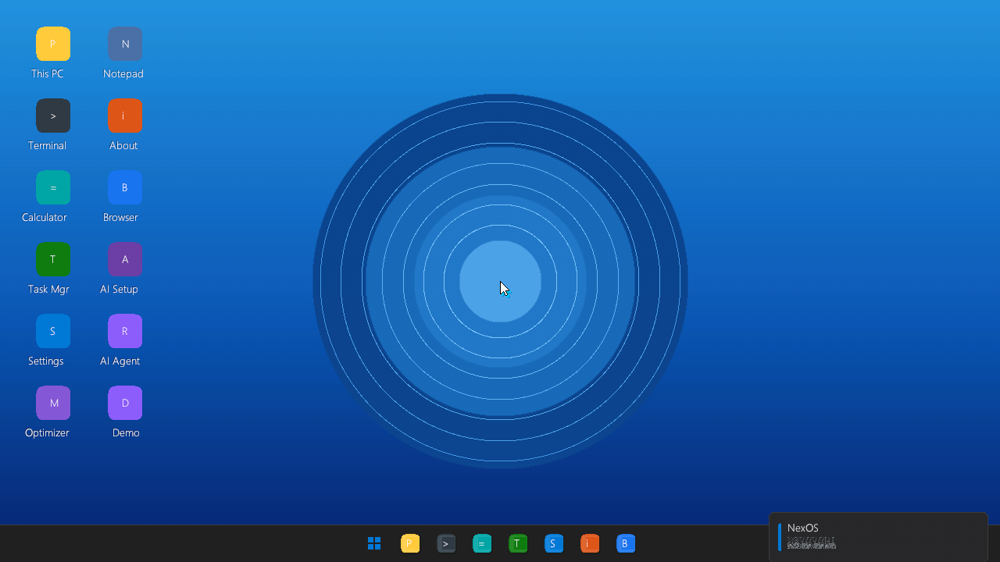
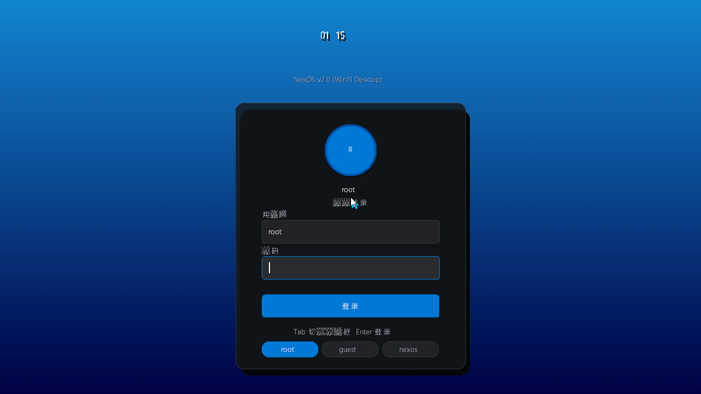

NexOS 从空硬盘与 512 字节引导扇区起步，最终长成一个融合 图形桌面、C# 托管壳、浏览器 Web 控制台、本地大模型推理与分布式算力网络 的教学级全栈系统。

以自研 C++ 内核为底座，融合 C# 托管桌面壳、浏览器端 Web 控制台、本地大模型推理与分布式算力网络的教学级全栈操作系统。起点是写一个能启动的引导扇区，如今已能跑起自己的桌面、自己的浏览器、自己的 AI 和由多台虚拟机组成的算力集群。
从引导扇区到图形桌面，从文件系统到 AI 推理，几乎每一层都是自己写出来的。
帧缓冲自绘 Win11 风格桌面，叠加 C# 托管壳（NexOS.Forms）实现窗口管理器、菜单、托盘与登录。按需启动，兼容任意显卡。
Markov + GPT 文本引擎，以及内置 Qwen2-0.5B（Q4_K_M）GGUF Transformer 推理引擎，支持 64 位流式输出与智能体 Agent。
浏览器端 Win11 桌面 + 分布式网络面板 + Agent Forge，经 WebSocket 桥连真 QEMU 内核 —— 登录、命令、算力任务全部真实执行。
内核内 distnet（UDP 发现 + 调度 + 回收）+ 独立运行时 dcn，把推理/计算任务分片下发到多虚拟机合并推理。
自研 PE/Win32 子系统（可跑自研 IE 浏览器）、Linux ELF/动态链接兼容层、以及移植的 Mono 运行时跑 .NET 托管代码。
MKFS + SFS 双文件系统（数据盘跨重启持久化）、用户/权限/sudo、NE2000 网络栈 + HTTP、中文点阵字库 + 拼音 IME。
Stage1→Stage2 二阶引导，32 位保护模式内核 + 64 位长模式内核，`switch64`/`switch32` 可互切，SMP 多核支持。
滚动回看 + 剪贴板（鼠标选择/中键粘贴/Ctrl+C/V），PS/2 键鼠驱动，PowerShell 风格 shell 内置 48+ 命令。
WSL / 原生 Linux 下 `make` 自动探测并 apt 安装 gcc-multilib、qemu、gnu-efi、dotnet 等全部利器，开箱即编。
以下截图取自 QEMU 虚拟机内真实启动的 NexOS。

直接下载自打包的启动镜像，用 QEMU 在任意 Linux / Windows 上几秒开机。
自研 BIOS 双引导镜像，含 32/64 位内核、图形桌面、文件系统与演示数据。
c057ed6e77c8915b21ba36c56b71d946e30ed4f28511680c73c790258bf24934使用前面“⬇ 下载镜像”按钮拿到 os_v2.img，然后：
$ qemu-system-x86_64 -m 1024 -drive file=os_v2.img,format=raw,if=ide -vga std
用户 root / 密码 admin（或 guest / guest）。终端里输入 help 查看 48+ 命令。